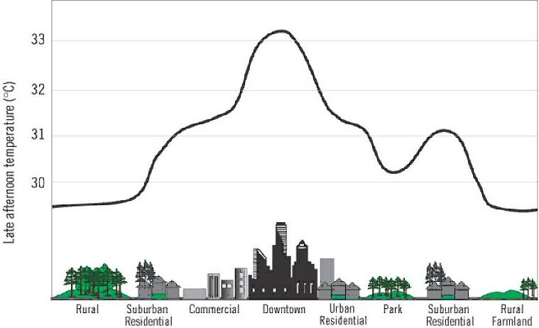
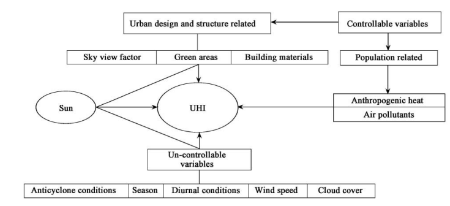
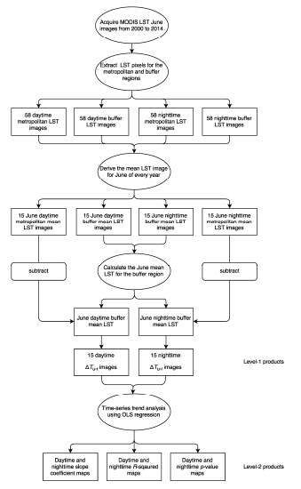
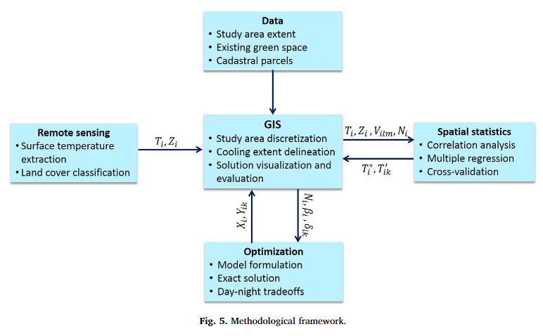
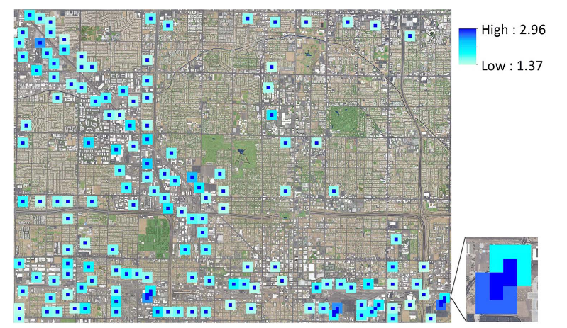

Week 8
Summary
This week we went through mainly two topics in the lecture and the practical:
Temperature and Policy
What is the urban heat island
The cost of the urban heat island
Global and local policies addressing this issue
Extraction of Temperature from Satellite Data
How can remotely sensed data may be used
Metropolitan UHI reduction activities
Rethinking planning requirements – case study
To start off, I will provide a summary of the content through a Q&A format of questions to be considered for the topic of Urban Heat Island, which we covered in the lecture and is an “an important environmental problem facing all large urban centers” (Hulley 2012, 95). Some references to Phoenix will be made here as it is the choice of city for the group presentation. .
What is the Urban Heat Island?
- The Urban Heat Island refers to the phenomena where an urban or metropolitan area has a significantly higher temperature compared to the surrounding rural areas due to human activities (Takebayashi and Moriyama 2020)

How does it occur?
- The following diagram demonstrates how the Urban Heat Island is caused, showing how there are many factors involved in the process of the generation of this effect. The main two sources of Urban Heat Island can be attributed to the heat generated from urban structures from their consumption and re-radiation of solar radiation (“Urban design and structure related” in the diagram) and anthropogenic heat from sources such as power plants, automobiles, air-conditioners (Rizwan, Dennis, and Chunho 2008, 121).

What are the (expected) impacts of Urban Heat Island? (Considering Phoenix)
Social
- Total of 323 heat-related deaths in 2020, reaching a recorded high for consecutive five years (The Nature Conservatory and AECOM 2021)
Environmental
- 1°F increase in daily low temperatures associated with 290 gallons increase an average monthly usage of water for a typical single-family unit (Guhathakurta and Gober 2007)
Economic
- Inaction towards the mitigation of heat resulting in loss of $1.9 billion (medium stabilization scenario) and $2.3 billion (high emission scenario) annually (The Nature Conservatory and AECOM 2021)
What are there any policies addressing this issue?
Global policies
New Urban Agenda. Sustainable Development Goals
- Wide frame goals regarding sustainability of cities, not specific to heat
Beating the Heat Handbook
Useful as a guidance stating the importance of integrating heat mitigation strategies into policy – first major document
Does not consider specifics (how to use data, what planing rules need to be changed, what roles are required, interest in government etc)
Local policies – case of Phoenix
Phoenix climate action plan – 2050 heat section goal (Phoenix 2021)
Increase in green infrastructure and tree canopy
Increase in open spaces and green spaces
Implementation of Cool Pavement and Cool Corridors Programs
- Should develop a better understanding of the specific locations for the implementation of green space and cooling?
Application
Remote sensing may be used to address the issue from both the problem side in terms of how the urban heat island effect intensifies with land cover change and the solution side in terms of the possible interventions and its effectiveness. Here I will introduce two studies, both based in Phoenix, Arizona, which each consider the urban heat island problem with the two perspectives respectively.
The study by Wang et al. (2016) studies how the urban heat island effect has expanded spatially across time and its relationship with land usage land cover (LULC) in the Phoenix Metropolitan Area. For the temperature data, it uses land surface temperature data from MODIS, specifically 8-day composite June imagery due to ideal weather conditions. One limitation of the usage of MODIS is the low spatial resolution (1000m). However, it is argued that the generation for a relatively large sample size may account for this limitation. A total of 58 images are collected. For the classified LULC map, Landsat Data for 2000 (Landsat 5 Thematic Mapper Image) and 2014 (Landsat 8 Operational Land Imager) are used, based on 30m spatial resolution. The data is classified into a total of 6 classes (water, impervious surface, vegetation, urban/residential area, open soil and fallow cropland) using the Iterative Self-Organising Data Analysis (ISODATA) unsupervised classification algorithm. The accuracy assessment is based on a minimum of 50 sample points for each class produced from a stratified random sampling approach and is conducted using Google Earth and local observations.

The study demonstrates that the areas which went through the most change in land surface temperature for both daytime and nighttime are mainly around the outer boundary of Phoenix Metropolitan Area, demonstrating patterns of urban sprawl. In addition, change from various LULC classes to urban, residential and imperious surfaces as the main factors for the urban heat island in the area. Furthermore, vegetation cover is associated with decrease in land surface temperature.
The study conducted by Zhang et al. (2017) propose a framework for the identification of the optimal location and configuration of new green spaces based on the integration of GIS, remote sensing, spatial statistics and spatial optimisation, and is applied to Phoenix. Arizona. The remote sensing data used here is from ASTER, specifically the ASTER_08 product, which is generated from the five thermal infrared bands, containing the surface temperature at 90m spatial resolution. A consecutive day-night imagery (17 June 2010 22:00 and 18 June 2010 11:00) is considered, with the study area consisting of 11466 pixels. Additionally, a land cover classification based on the aerial imagery (four bands – RGB and NIR, 1m spatial resolution) from the National Agricultural Imagery Program. The overall methodological framework is provided in the diagram below.


With this framework, land surface temperature may be expected by 1-2a the local scale, and 0.5 at the regional scale. The locational placement of green spaces is influential, as depending on whether the green space is clustered or dispersed determines at what spatial scale we may observe the cooling effect. This framework may be one possible solution to the question I had regarding Phoenix’s policies for the implementation of green space.
Reflection
Urban Heat Island is a very familiar topic growing up in the concrete jungles of Tokyo, spending very hot summers with high humidity every year. Therefore, I was able to connect my experiences in the past to the impacts of the urban heat island. It also made me consider whether the policies at both the global scale and more local scale are actually effective in mitigating the heat, and whether these policies are actually taking into consideration remote sensing data in any sort of way. Researching possible articles and policies to consider for the application section, it came to my attention that many of the studies were primarily focused on how the urban island affect arises or expands and how the results may be used for effective policy in a rather passive manner but not many cities have not taken them into consideration. Perhaps there is a limitation in that there are not many people familiar with both policy and remote sensing, but I think it would be beneficial if we can see more remote sensing data being applied for this problem.